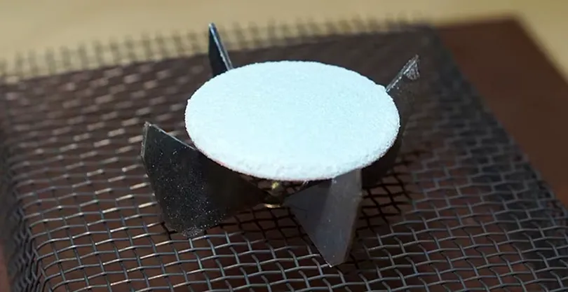
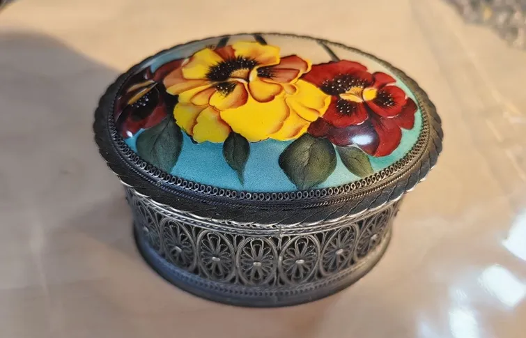

Услуги
Помимо готовых изделий, «Ростовская эмаль» реставрирует финифть и создаёт украшения по индивидуальному заказу. Консультация мастера — бесплатно.

Примеры работРемонт и реставрация
Ремонт изделий из финифти начинается с диагностики: мастер осматривает сколы и трещины эмали, потёртости росписи, повреждения оправы и коррозию основы. Затем подбирает краски под исходные цвета, восстанавливает роспись и закрепляет её обжигом.
Вернём блеск потускневшему изделию с помощью полировки, восстановим утраченные фрагменты росписи, заменим застёжку или починим оправу.
Стоимость и срок называем после осмотра — консультация бесплатная, ремонт занимает от 3 дней. Изделие можно привезти в мастерскую или прислать фото для предварительной оценки.
Индивидуальный заказ
Изготовим изделие из финифти по вашему замыслу. Пришлите эскиз или фото-образец, укажите размер, материал основы (медь или серебро), цветовую гамму и назначение — украшение, икона, панно или подарок.
Можно выбрать орнамент из классических ростовских мотивов, добавить гравировку с именем или датой. Специалист «Ростовской эмали» свяжется с вами, уточнит детали, бюджет и сроки изготовления.
Вы получите уникальное изделие в традиционном стиле финифти — с яркой росписью и глянцевым блеском эмали, сертификатом подлинности и в подарочной упаковке.

Смотреть каталогЕсть вопрос или хотите оставить отзыв?
Напишите нам — мастер ответит в течение рабочего дня.